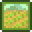
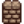

Farming
Farming is the skill associated with planting, growing, and harvesting crops on the farm, and also the care of farm animals. It's one of the main income sources for the game, and provides most of the ingredients for cooking.

Farming Skill
The farming skill level can be viewed in the skill tab of the pause menu. Each level grants +1 proficiency to the Hoe and Watering Can, which reduces the energy cost of using the tools. Higher farming skill also increases the chance to obtain quality crops.
To level up farming skill requires experience points, which are gained by harvesting crops, petting farm animals, milking cows or goats, shearing sheep, picking up animal products inside a coop, or reading the Stardew Valley Almanac or Book Of Stars.
| Level 1 | Level 2 | Level 3 | Level 4 | Level 5 | |
|---|---|---|---|---|---|
| Crafting Recipes: | Crafting Recipes: | Crafting / Cooking Recipes: | Crafting Recipes: | Choose a Profession: | |
| Scarecrow |  Stone Fence Sprinkler |
Animal products worth 20% more. |
Crops worth 10% more. (Bonus applies to all Vegetables and Flowers, plus any Fruit that has not been foraged) | ||
| Level 6 | Level 7 | Level 8 | Level 9 | Level 10 | |
| Crafting Recipes: | Crafting Recipes: | Crafting Recipes: | Crafting Recipes: | Rancher: | Tiller: |
| Loom | Coopmaster
Befriend coop animals quicker. Incubation time (for Incubator, Ostrich Incubator, and Slime Incubator) cut in half. (Also improves coop product quality, see details here) |
Artisan goods (wine, cheese, oil, etc.) worth 40% more. (Note that oil does not actually benefit from the Artisan Profession) | |||
| Shepherd
Befriend barn animals quicker. Sheep produce wool faster. (Also improves barn product quality, see details here) |
All crops grow 10% faster. | ||||
Effect of Coopmaster and Shepherd on Animal Product Quality Frequency
On top of the ability in the skill description of befriending the relevant animal type faster (+30 friendship when petted instead of the base +15) and either halving incubation time or increasing wool production from sheep, the Coopmaster and Shepherd professions have a hidden benefit that isn't stated anywhere in the game. They each add 0.333 to the score used to calculate product quality for the animal type relevant to the skill. This results in substantially higher rates of iridium quality products. To illustrate, below is a table showing average frequency of iridium, gold and silver products with and without the Shepherd/Coopmaster professions for an animal with max friendship (5 hearts, 1000 friendship points) and max mood (255):
| Profession | % Iridium quality | % Gold quality | % Silver quality |
|---|---|---|---|
| No (or other) Profession | 56.665% | 24.556% | 18.779% |
| Coopmaster or Shepherd | 73.315% | 19.564% | 7.121% |
Complete Formula
| Details |
|---|
The game normally calculates animal product quality using a score for each animal with the following formula: ((Friendship/1000) - (1 - (Mood/225)) (interestingly, the game doesn't factor in daily luck in this calculation)
For example, an animal with 1000 Friendship and 255 Mood (max friendship and mood) would be calculated thus:
The game will begin checking what quality to create by first seeing if the whole score is above 0.95. If it is, the score divided by 2 will be compared against a random number between 0-1. If the score divided by 2 is greater than the random number, the item will be Iridium quality. If the score is below 0.95 or the check fails, the score divided by 2 will then be compared against a random number between 0-1. If the score divided by 2 is greater than the random number, the item will be Gold quality. If that check also fails, the whole score will then be compared against a random number between 0-1. If it is greater than the random number, the item will be Silver quality. Finally, if that check also fails, the item will be normal quality (though in the example above, the score is higher than 1, so a check for silver quality will always succeed if the two prior fail). (Note that the 0.333 bonus to the score by the Coopmaster and Shepherd professions is applied to the whole score, not the halved score.) Since the score is above 1 and the odds of normal quality produce can be ignored, the odds in this example without the bonus 0.333 can be calculated as:
Since iridium products are worth 2× base price, gold products are worth 1.5× base price, and silver products are worth 1.25× base price, we can then calculate the percentage of base price in profits this results in:
|
Crop Quality Frequency
Quality is determined when the crop is harvested, and not when it is planted. For crops that produce multiples at harvest (i.e., Coffee Bean, Blueberry, Cranberries), Basic and Quality fertilizers affect only the first crop produced.
First the game tests if the crop gets gold quality, if it doesn't it tries again with silver quality. If both fail the crop is normal quality. Quality is also dependent on the use of Fertilizer.
The basic formula for finding a gold quality crop (not including fertilizer) is 1% + 2% per farming level. The basic formula for finding a silver quality crop is 2% + 4% per level, though the game must first fail to award a gold quality crop before it will check to award a silver quality crop, so the chances for a silver quality are slightly reduced. The tables below show the probabilities of harvesting each quality of crop. Note that it is possible to reach Farming level 11-14 with buffs from Food.
Normal soil
| Farming level | % Regular quality | % Silver quality | % Gold quality | Average price |
|---|---|---|---|---|
| 0 | 97% | 2% | 1% | 1.01 |
| 1 | 91% | 6% | 3% | 1.03 |
| 2 | 85% | 10% | 5% | 1.05 |
| 3 | 80% | 13% | 7% | 1.07 |
| 4 | 75% | 16% | 9% | 1.09 |
| 5 | 69% | 20% | 11% | 1.10 |
| 6 | 64% | 23% | 13% | 1.12 |
| 7 | 60% | 25% | 15% | 1.14 |
| 8 | 55% | 28% | 17% | 1.16 |
| 9 | 50% | 31% | 19% | 1.17 |
| 10 | 46% | 33% | 21% | 1.19 |
| 11 | 42% | 35% | 23% | 1.20 |
| 12 | 38% | 37% | 25% | 1.22 |
| 13 | 34% | 39% | 27% | 1.23 |
| 14 | 30% | 41% | 29% | 1.25 |
Soil with Basic Fertilizer
| Farming level | % Regular quality | % Silver quality | % Gold quality | Average price |
|---|---|---|---|---|
| 0 | 88% | 8% | 4% | 1.04 |
| 1 | 77% | 15% | 8% | 1.08 |
| 2 | 68% | 20% | 12% | 1.11 |
| 3 | 59% | 26% | 15% | 1.14 |
| 4 | 50% | 31% | 19% | 1.17 |
| 5 | 42% | 35% | 23% | 1.20 |
| 6 | 35% | 39% | 26% | 1.23 |
| 7 | 28% | 42% | 30% | 1.25 |
| 8 | 22% | 44% | 34% | 1.28 |
| 9 | 16% | 47% | 37% | 1.30 |
| 10 | 15% | 44% | 41% | 1.32 |
| 11 | 14% | 41% | 45% | 1.33 |
| 12 | 13% | 39% | 48% | 1.34 |
| 13 | 12% | 36% | 52% | 1.35 |
| 14 | 11% | 33% | 56% | 1.36 |
Soil with Quality Fertilizer
| Farming level | % Regular quality | % Silver quality | % Gold quality | Average price |
|---|---|---|---|---|
| 0 | 78% | 14% | 8% | 1.07 |
| 1 | 64% | 23% | 13% | 1.12 |
| 2 | 52% | 30% | 18% | 1.17 |
| 3 | 40% | 36% | 24% | 1.21 |
| 4 | 30% | 41% | 29% | 1.25 |
| 5 | 21% | 45% | 34% | 1.28 |
| 6 | 15% | 45% | 40% | 1.31 |
| 7 | 14% | 41% | 45% | 1.33 |
| 8 | 13% | 37% | 50% | 1.34 |
| 9 | 11% | 33% | 56% | 1.36 |
| 10 | 10% | 29% | 61% | 1.38 |
| 11 | 9% | 25% | 66% | 1.39 |
| 12 | 7% | 21% | 72% | 1.41 |
| 13 | 6% | 17% | 77% | 1.43 |
| 14 | 4% | 13% | 82% | 1.44 |
Soil with Deluxe Fertilizer
Normal quality crops cannot be produced when using Deluxe Fertilizer.
| Farming level | % Silver quality | % Gold quality | % Iridium Quality | Average price |
|---|---|---|---|---|
| 0 | 84% | 10% | 6% | 1.32 |
| 1 | 75% | 16% | 9% | 1.36 |
| 2 | 66% | 22% | 13% | 1.40 |
| 3 | 57% | 27% | 16% | 1.44 |
| 4 | 49% | 31% | 20% | 1.47 |
| 5 | 42% | 35% | 23% | 1.51 |
| 6 | 35% | 39% | 27% | 1.55 |
| 7 | 28% | 42% | 30% | 1.58 |
| 8 | 22% | 45% | 34% | 1.61 |
| 9 | 16% | 47% | 37% | 1.64 |
| 10 | 11% | 48% | 41% | 1.67 |
| 11 | 7% | 49% | 44% | 1.70 |
| 12 | 3% | 50% | 47% | 1.73 |
| 13 | 0% | 49% | 51% | 1.76 |
| 14 | 0% | 46% | 55% | 1.77 |
Complete Formula
The probability that a crop's quality increases is linear with respect to your farming level and the soil fertilizer quality (0 for normal soil, 1 for Basic Fertilizer, 2 for Quality Fertilizer, and 3 for Deluxe Fertilizer). That is, the probability increases the same amount with each level for the same fertilizer quality, and with each fertilizer quality for the same farming level.
The formulas used in the game's code are as follows [1]:
| Quality | Formula |
|---|---|
| Gold | 0.2 * (farming level / 10) + 0.2 * (fertilizer level) * ((farming level + 2) / 12) + 0.01
|
| Silver | 2 * chance for gold quality (capped at 75%)
|
| Iridium | chance for gold quality / 2
|
Additionally, if the fertilizer is deluxe or better, then silver is the guaranteed minimum quality, and iridium is made possible.
The game checks each formula in the order iridium, gold, and silver. Note the probability calculation must take that into account: for instance on a soil without deluxe fertilizer, silver quality can be selected only if gold has not been chosen, and then the global chance for silver is equal to (1 - chance for gold quality) * (minimum between (0.75) and (2 * chance for gold quality)).
Experience Points
The amount of experience gained from harvesting crops varies from crop to crop, with more expensive crops giving more experience upon harvest. Crops with multiple harvests give experience for every harvest. Crops that yield multiple produce per harvest, such as blueberry, cranberry, or potato, only reward experience for the first product and do not offer any extra experience for the multiples.
Petting a farm animal, milking a cow or goat, shearing a sheep, or picking up an animal product inside a coop gives 5 experience points each. (Picking up Truffles gives Foraging experience rather than Farming experience.)
250 Farming XP is gained for reading a copy of the Stardew Valley Almanac or Book Of Stars.
To level up farming from level 0 to 1, it takes 13 parsnips, or 8 potatoes, or 5 cauliflowers. From level 0 to 2, it takes about 48 parsnips, or 28 potatoes, or 17 cauliflowers.
| Spring | |
|---|---|
| Crop | XP |
| 4 | |
| 7 | |
| 7 | |
| 8 | |
| 8 | |
| 9 | |
| 10 | |
| 12 | |
| 14 | |
| 17 | |
| 18 | |
| 23 | |
| 26 | |
| 38 | |
| 14 | |
| Summer | |
|---|---|
| Crop | XP |
| 4 | |
| 6 | |
| 6 | |
| 9 | |
| 9 | |
| 10 | |
| 10 | |
| 12 | |
| 5[2] | |
| 15 | |
| 15 | |
| 20 | |
| 27 | |
| 28 | |
| 43 | |
| 38 | |
| 14 | |
| 16 | |
| 30 | |
| Fall | |
|---|---|
| Crop | XP |
| 6 | |
| 10 | |
| 12 | |
| 13 | |
| 14 | |
| 14 | |
| 14 | |
| 5[2] | |
| 16 | |
| 21 | |
| 22 | |
| 22 | |
| 29 | |
| 31 | |
| 38 | |
| 64 | |
| 14 | |
| Winter | |
|---|---|
| Crop | XP |
| 12 | |
The experience points awarded are calculated using the formula XP=||16 × ln(0.018 × PRICE + 1)|| where PRICE is the base sell price of the crop (listed in Data/Objects.xnb). High quality crops grant the same amount of XP as normal-quality crops.
Harvesting forage plants grown from Wild Seeds grants 3 Farming experience points and 2 Foraging experience points per plant.
Experience level is increased immediately upon harvesting, but the "level up" window doesn't appear until after going to sleep.
| Lvl | Total Lifetime Parsnips Harvested | Experience |
|---|---|---|
| 1 | 13 | 100 |
| 2 | 48 | 380 |
| 3 | 97 | 770 |
| 4 | 163 | 1300 |
| 5 | 269 | 2150 |
| 6 | 413 | 3300 |
| 7 | 600 | 4800 |
| 8 | 863 | 6900 |
| 9 | 1250 | 10000 |
| 10 | 1875 | 15000 |
Food
Certain cooked dishes will temporarily increase farming level. Qi Seasoning can be applied to further increase the stat buff for dishes cooked by the player.
| Image | Name | Description | Ingredients | Energy / Health | Buff(s) | Buff Duration | Recipe Source(s) | Sell Price | |||
|---|---|---|---|---|---|---|---|---|---|---|---|
| Complete Breakfast | You'll feel ready to take on the world! |
|
|||||||||
| Hashbrowns | Crispy and golden-brown! |
|
|||||||||
| Pepper Poppers | Spicy breaded peppers filled with cheese. |
|
|||||||||
| Tom Kha Soup | These flavors are incredible! |
|
|||||||||
| Farmer's Lunch | This'll keep you going. | ||||||||||
| Maple Bar | It's a sweet doughnut topped with a rich maple glaze. |
|
Crops
| Crops | |
|---|---|
| Spring | Blue Jazz • Carrot • Cauliflower • Coffee Bean • Garlic • Green Bean • Kale • Parsnip • Potato • Rhubarb • Strawberry • Tulip • Unmilled Rice |
| Summer | Blueberry • Coffee Bean • Corn • Hops • Hot Pepper • Melon • Poppy • Radish • Red Cabbage • Starfruit • Summer Spangle • Summer Squash • Sunflower • Tomato • Wheat |
| Fall | Amaranth • Artichoke • Beet • Bok Choy • Broccoli • Corn • Cranberries • Eggplant • Fairy Rose • Grape • Pumpkin • Sunflower • Wheat • Yam |
| Winter | Powdermelon |
| Special | Ancient Fruit • Cactus Fruit • Pineapple • Qi Fruit • Sweet Gem Berry • Taro Root • Tea Leaves |
References
History
- 1.0: Introduced.
- 1.1: Adjusted Rancher bonus to 20%, up from 10%, Artisan now increases the value of Artisan Goods by 40%, down from 50%.
- 1.2.26: Farming level now affects crop yield prior to level 10.
- 1.3.27: Fixed bug that prevented farming XP being granted when harvesting with Scythe.
- 1.6: Farming Experience can now be gained by reading the Stardew Valley Almanac or Book Of Stars. Harvesting Wild Seeds now gives 3 Farming XP.
| Skills & Stats | |
|---|---|
| Skills | Farming • Mining • Foraging • Fishing • Combat |
| Stats | Attack • Crit. Chance • Crit. Power • Defense • Immunity • Luck • Magnetism • Speed • Weight |